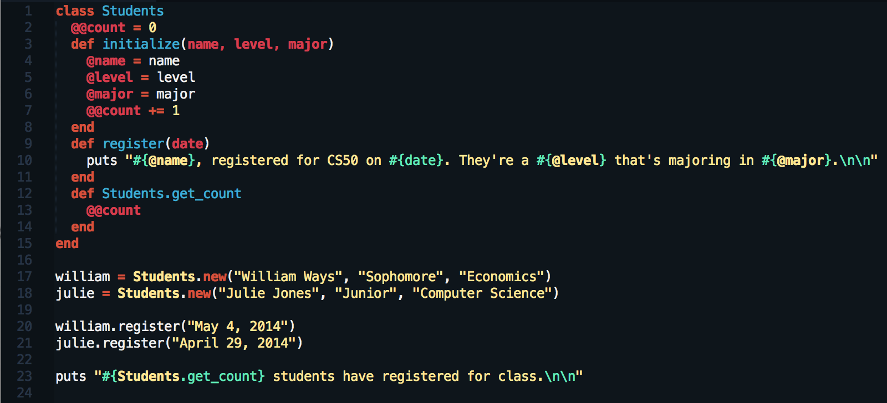
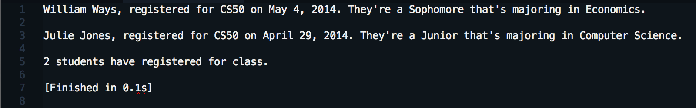

Register for Class
May 23, 2014 | Week 5 - Technical
As we’ve discussed in the past, Ruby is an object-oriented programming language. Almost everything in Ruby is an object. Those objects are what allow us to build and execute different programs. One of the ways Ruby organizes all of these objects is into classes. “Hello, World!” is a member of the String class. 7 is a member of the Fixnum class. Members of the same class will have similar attributes and methods they can access.
One of the cool things about Ruby is that we aren’t limited to the built in classes like Strings and Fixnum, we can create our own. Once we do, we can create objects that will be members of that class and will have access to the methods we specify. Check out this example.
Class Example

Let’s break down what we’ve created starting from the top and work our way down. First, we created our Students class. We then set a class variable (identified by the @@) of count to zero. It’s a class variable in that the object Students will be able to access it’s value. Next we defined our initialize method. Think of this as the “boot up” method that every member of Students will go through. Within it, we set instance variables (identified by the @) equal to the values we enter for each member. We also incremented our class variable.
We then created a register instance method that our members can call on once they join the class. In this case, the method will return a string or sentence. We went on to create a get_count method that the Students class can access but the individual members can not. This too is returning a string or sentence.
With our class Students done, we now just have to instantiate or create each individual member. We did this by giving the member a variable which we associated with the building method and passed it three parameters. We then could call on our instance method using our instance members. Finally, we called on the class method to give us our class count. Here’s the output from the last three lines of our code.
Code Output

Learn More
This was just a simple introduction to classes. If you want to class it up even more, check out these resources and start building some Ruby objects of your own.
- Codecademy - Ruby Track - Object-Oriented Programming I
- Tuts+ Tutorial - Ruby for Newbies: Working with Classes
- Ruby Documentation - Core 2.1.1 - Class
You can start simple like we did in this lesson and once you have the knack you can create more complex objects. Remember, since almost everything in Ruby is an object, classes provide us a great tool to organize and utilize those objects.